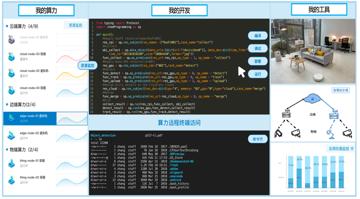
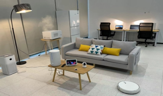
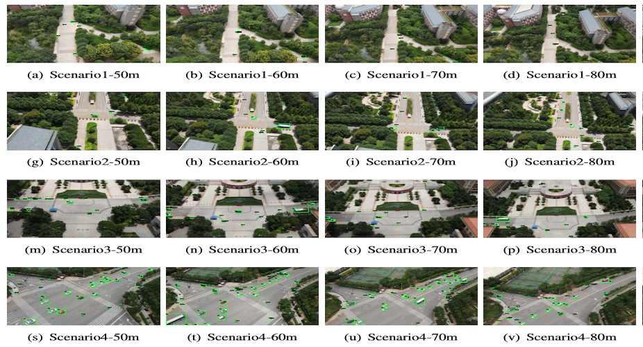
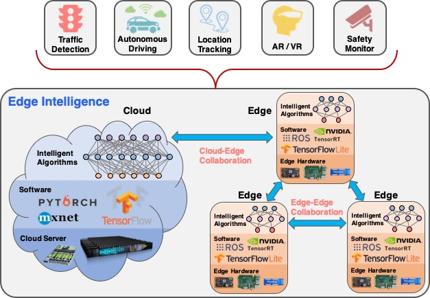
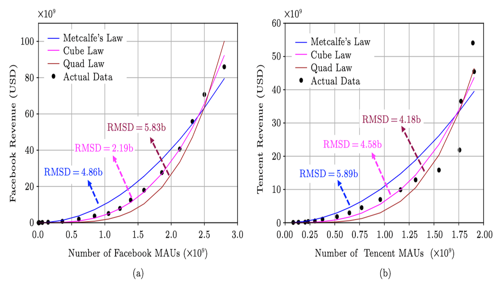

Xingzhou Zhang is currently an Associate Professor at the Institute of Computing Technology, Chinese Academy of Sciences (ICT, UCAS, 中国科学院计算技术研究所). He is also engaged in innovation incubation at the Nanjing Institute of InforSuperBahn as a part-time researcher.
Xingzhou Zhang is currently an Associate Professor at the Institute of Computing Technology, Chinese Academy of Sciences (ICT, UCAS, 中国科学院计算技术研究所). He is also engaged in innovation incubation at the Nanjing Institute of InforSuperBahn as a part-time researcher.
He received his Ph.D. degree in 2020 from ICT, CAS under the supervision of Prof. Zhiwei Xu (徐志伟) . From 2017-2019, sponsored by China Scholarship Council, he was co-advised by Prof. Weisong Shi (施巍松) in the CAR Lab, Wayne State University, USA.
xingzhou92@gmail.com (backup)
Address: China: Kexueyuan South Road #6, Haidian, Beijing 100190. Google Scholar: Xingzhou Zhang
Github: zxzStar I am actively looking for self-motivated master students and interns with a passion for research. Locations include Beijing and Nanjing. Feel free to contact me if you find a match.
Research Interests
His research interests include distributed system, edge computing and Artificial Intelligence. Currently, he is focused on programming and deployment methods for cloud-edge-things distributed systems. The topics include distributed programming models, lightweight deployment frameworks, and edge intelligence algorithms. The research is focused on application scenarios such as Smart Homes, Connected and Autonomous Vehicles, and Unmanned Aerial Vehicles.
Projects
Select some ongoing projects.-
CET-Bed: A Testbed for Cloud-Edge-Things distributed systems
 We have built an experimental platform for cloud-edge distributed systems, which helps global users quickly build distributed applications for cloud-edge-things scenarios and encourages users to contribute to edge-cloud nodes. We achieve agile development and intelligent distribution through the novel programming method and online IDE. Currently, CET-Bed includes more than 100 cloud-edge-things nodes and has served multiple scientific and educational users. It is mainly aimed at smart home scenarios and has expanded to connected vehicles, unmanned aerial vehicles. Researchers are welcome to contact us for further communication.
-
Programmable smart home
 We have built a programmable experimental environment for smart home scenarios to study the scientific problems of human-machine-object collaboration. At present, this scenario includes multiple physical sensors, programmable home appliances, embedded home devices (such as smart meters, smart plug-in and rows, etc.), edge computing platforms, etc., which can be used to develop a variety of applications. In this environment, non-intrusive state awareness and multi-machine collaborative target recognition can be studied.
-
Pegasus: Research systems for UAVs
 This project is a system research aimed at Unmanned Aerial Vehicles(UAVs), which includes edge-cloud collaborative UAV systems, UAVs algorithms and payloads, UAVs datasets, and more. Currently, the research work has been published in academic journals and conferences such as IEEE IoT-J/Scientific Data/HPCC/UIC. Multiple UAVs datasets and systems have been made available, such as HIT-UAV (High-altitude Infrared Thermal dataset) and UDWA (UAV Datasets With Altitudes). For more information, please visit the webpage.
-
OpenEI: An open framework for Edge Intelligence
 OpenEI is a lightweight software platform to equip the edge with intelligent processing and data sharing capability. In this work, we define Edge Intelligence as a capability that enables intelligence at the edge. The goal of OpenEI is that any hardware, ranging from Raspberry Pi to edge server to the powerful cluster, will become an intelligent edge after deploying OpenEI. Meanwhile, the EI attributes, accuracy, latency, energy, and memory footprint, will have an order of magnitude improvement comparing to the current AI algorithms running on the deep learning package. For more information, please visit the webpage. -
The validate of Metcalfe's Law
 This projects uses actual data from Facebook and Tencent to verify Metcalfe's law (proposed by 2023 Turing Award winner Bob Metcalfe. This law, together with Moore's Law and Gild's Law, is called the three laws of the Internet), that is, the value of the network is proportional to the square of the user, and its range of action is extended from developed to demetveloping countries. At the same time, it is proposed that a cube law is more effective than Metcalfe's law. The related research was published in JCST in 2015 and 2023 respectively. Metcalfe himself noticed the paper, and many scholars expanded the research to explore the development of bitcoin in the blockchain field. Check out the video for details in 2023.
Publications
- Zhikun Dong, Xingzhou Zhang#, Evaluating Large Language Models on the Edge: A Use Case of Evaluatology, accepted by Evaluatology, December, 2024.
- Junquan Chen, Xingzhou Zhang#, Wei Zhou, Weisong Shi, TA-ASF: Attention-Sensitive Token Sampling and Fusing for Visual Transformer Models on the Edge, in Proceedings of the 9th ACM/IEEE Symposium on Edge Computing ( SEC), Rome, Italy, December 4-7, 2024.
- Zijian Wang, Xingzhou Zhang, Yifan Wang, Xiaohui Peng, Zhiwei Xu, Hawk: An Efficient NALM System for Accurate Low-Power Appliance Recognition,Proceedings of the 22nd ACM Conference on Embedded Networked Sensor Systems (SenSys), November 4-7, 2024, pp.578-591.(Best Artifact Evaluation Award).
- Jiashun Suo, Xingzhou Zhang, Weisong Shi, and Wei Zhou, E3-UAV: An Edge-based Energy-Efficiency Object Detection System for Unmanned Aerial Vehicles, IEEE Internet of Things Journal (IoT-J), Vol. 11, No. 3, Feb 2024, pp. 4398-4413.
- Zishu Yu, Fengzhi Li, Shoujian Zheng, Yifan Wang, Xingzhou Zhang, Xiaohui Peng, and Zhiwei Xu, 信息高铁的低熵高通量性质验证（Can Information Superbahn Achieve Low Entropy and High Goodput? A Validation Study),《计算机学报(Chinese Journal of Computers)》, Vol. 46, No. 11, 2023.
- Xingzhou Zhang, Zhiwei Xu, Facebook and Tencent Data Fit a Cube Law Better than Metcalfe’s Law, Journal of Computer Science and Technology (JCST), Vol. 38, No. 2, pp. 219-227, 2023.(Cover Article)
- Jiashun Suo, Tianyi Wang, Xingzhou Zhang# ,Haiyang Chen, Wei Zhou,and Weisong Shi, HIT-UAV: A High-Altitude Infrared Thermal Dataset for Unmanned Aerial Vehicles Object Detection, Scientific Data (Nature), Vol. 10, No. 227, 2023.
- Xiaoyang Jiang, Xingzhou Zhang, Xiaohui Peng, Flet-Edge: A Full Life-cycle Evaluation Tool for deep learning framework on the Edge, The 28th IEEE International Conference on Parallel and Distributed Systems (ICPADS), January 10-12, 2023, Nanjing, China.
- Haiyang Chen, Weiqiang Wang, Xingzhou Zhang, Weisong Shi, LightOcean: A Lightweight And Efficient Network For Real-time UAV Tracking, in Proceedings of the 19th IEEE International Conference on Ubiquitous Intelligence and Computing (UIC), Dec 15-18, 2022, Haikou, China.
- Weiqiang Wang, Haiyang Chen, Xingzhou Zhang, Weisong Shi, Aprus: An Airborne Altitude-Adaptive Purpose-Related UAV System for Object Detection, in Proceedings of the 2022 High Performance Computing and Communications (HPCC), Dec 18-21, 2022, Chengdu, China.
- Jiashun Suo, Xingzhou Zhang, Shilei Zhang*, Wei Zhou, Weisong Shi, Feasibility Analysis of Machine Learning Optimization on GPU-based Low-cost Edges in Proceedings of the 18th IEEE International Conference on Ubiquitous Intelligence and Computing (UIC), Oct 18, 2021, Atlanta, USA.
- Kumar Mohit, Xingzhou Zhang, Liangkai Liu, Yifan Wang, and Weisong Shi. Energy-efficient machine learning on the edges In 2020 IEEE International Parallel and Distributed Processing Symposium Workshops (IPDPSW), pp. 912-921. IEEE, 2020.
- Xingzhou Zhang, Research on Data Professing Framework for Edge Intelligence, PhD dissertstion.面向边缘智能的数据处理框架研究，北京，2020.
- Xingzhou Zhang, Mu Qiao, Liangkai Liu, Pengfei Xu, and Weisong Shi, Collaborative Cloud-Edge Computation for Personalized Driving Behavior Modeling, in Proceedings of the fourth ACM/IEEE Symposium on Edge Computing (SEC), November 7-9, 2019, Arlington, VA, USA.
- Xingzhou Zhang, Yifan Wang, Sidi Lu, Liangkai Liu, Lanyu Xu, Weisong Shi, OpenEI: An Open Framework for Edge Intelligence, in Proceedings of the 39th IEEE International Conference on Distributed Computing Systems (ICDCS), Vision/Blue Sky Track, July 7-10, 2019, Dallas, USA.
- Xingzhou Zhang, Sidi Lu, Weisong Shi, 边缘智能中的协同计算技术研究 (Collaborative Computing Techniques in Edge Intelligence), 《人工智能》（AI View), CCID, No. 12, Oct, 2019, China.
- Fang Liu, Guoming Tang, Youhuizi Li, Zhiping Cai, Xingzhou Zhang, Tongqing Zhou, A Survey on Edge Computing Systems and Tools, in Proceedings of the IEEE (PIEEE), Vol. 107, No. 8, August 2019. pp. 1537-1562.
- Yifan Wang, Liangkai Liu, Xingzhou Zhang, and Weisong Shi, HydraOne: An Indoor Experimental Research and Education Platform for CAVs, in Proceedings of the 2nd USENIX Workshop on Hot Topics in Edge Computing (HotEdge), July 9, 2019, Renton, WA, USA.
- Liangkai Liu, Xingzhou Zhang, Qingyang Zhang, Andrew Weinert, Yifan Wang and Weisong Shi, AutoVAPS: An IoT-Enabled Public Safety Service on Vehicles, in Proceedings of 4th Workshop on Science of Smart City Operations and Platforms Engineering (SCOPE), April 15-18, 2019.
- Weisong Shi, Xingzhou Zhang, Yifan Wang and Qingyang Zhang 边缘计算：现状与展望（Edge Computing: Start-of-the-Art and Future Directions),《计算机研究与发展(Journal of Computer Research and Development)》（60周年特刊） , Vol. 56, No. 1, January 2019.
- Xingzhou Zhang, Yifan Wang, and Weisong Shi, pCAMP: Performance Comparison of Machine Learning Packages on the Edges, in Proceedings of USENIX Workshop on Hot Topics in Edge Computing (HotEdge), July 10, 2018, Boston, USA.
- Liangkai Liu, Xingzhou Zhang, Mu Qiao, and Weisong Shi, SafeShareRide: Edge-based Attack Detection in Ridesharing Services, in Proceedings of the third ACM/IEEE Symposium on Edge Computing (SEC), Oct. 25-27, 2018. Bellevue, WA.
- Liangkai Liu, Xingzhou Zhang, Mu Qiao, and Weisong Shi, SafeShareRide: Edge-based Attack Detection in Ridesharing Services, in Proceedings of USENIX Workshop on Hot Topics in Edge Computing (HotEdge), July 10, 2018, Boston, USA.
- Qingyang Zhang, Yifan Wang, Xingzhou Zhang, Liangkai Liu, Xiaopei Wu, Weisong Shi and Hong Zhong, OpenVDAP: An Open Vehicular Data Analytics Platform for CAVs, in Proceedings of the 38th IEEE International Conference on Distributed Computing Systems (ICDCS), Vision/Blue Sky Track, July 2-5, 2018, Vienna, Austria.
- Xiaohui Peng, Xingzhou Zhang, Yifan Wang, and Lu Chao, Web使能的物端计算系统（Web Enabled Things Computing System),《计算机研究与发展（Journal of Computer Research and Development）》, Vol. 55, No. 3, pp. 572-584. Feb 2018. (Chinese)
- Xingzhou Zhang, Yifan Wang, Lu Chao, Lang Wu, Chundian Li, Xiaohui Peng, and Zhiwei Xu, IEHouse: A Non-Intrusive Household Appliance State Recognition System, in Proceedings of the 14th IEEE International Conference on Ubiquitous Intelligence and Computing (UIC). Aug 4-8, 2017, San Francisco, USA.
- Xingzhou Zhang, Jingjie Liu, and Zhiwei Xu, Tencent and Facebook data validate Metcalfe's law, Journal of Computer Science and Technology (JCST), Vol. 30, No. 2, pp. 246-251, 2015.
- Yifan Wang, Xingzhou Zhang, Lu Chao, Lang Wu and Xiaohui Peng, PowerAnalyzer: An Energy-Aware Power Monitor System Aiming at Energy-Saving, in Proceedings of the 8th IEEE International Conference on Green and Sustainable Computing Conference (IGSC). Oct 23-25, 2017, Orlando, Florida, USA.
Foundings
Copyright (C) 2015-2023 by Xingzhou Zhang.